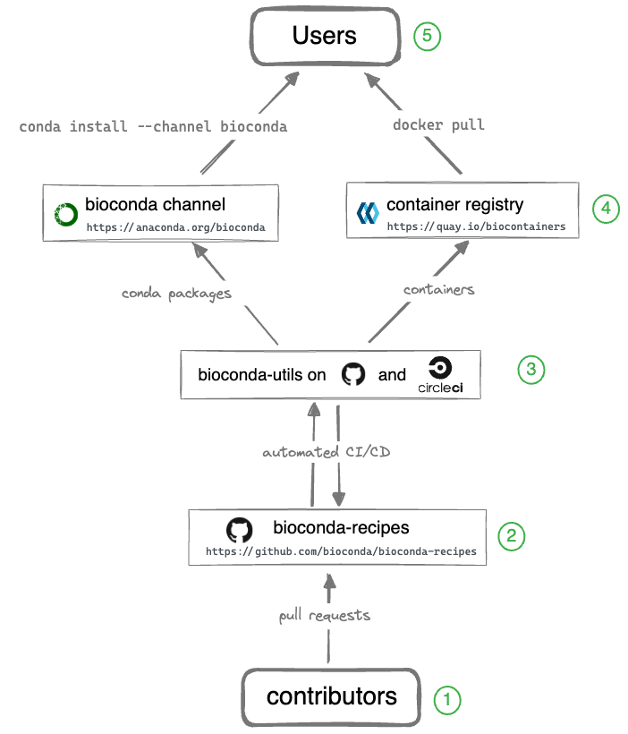

Bioconda lets you install thousands of software packages related to biomedical research using the conda package manager.
NOTE: Bioconda supports only Linux (64-bit and AArch64) and macOS (x86_64 and ARM64)
Usage¶
First, install conda.
Then perform a one-time set up of Bioconda with the following commands. This
will modify your ~/.condarc file:
conda config --add channels defaults
conda config --add channels bioconda
conda config --add channels conda-forge
conda config --set channel_priority strict
If you have used Bioconda in the past, note that the recommended configuration has changed over the years. You should run the above commands to ensure your settings follow the current recommendations.
How have the recommendations changed?
How have the recommendations changed?¶
In June 2022, the additional command conda config --set
channel_priority_strict was added; see the explanation of commands below for details.
What did these commands do?
What did these commands do?¶
In general, running conda config modifies your condarc file which can be
found at ~/.condarc by default.
The first three commands add channels, from lowest to highest priority. The order is important to avoid problems with solving dependencies:
conda config --add channels defaults
conda config --add channels bioconda
conda config --add channels conda-forge
The
defaultschannel is the one set by default in a new installation of conda. It should be set to the lowest priority.The
biocondachannel enables installation of packages related to biomedical research.The
conda-forgechannel (see docs) enables installation of general-purpose packages. Sincebiocondaheavily depends on theconda-forgechannel, it is set to highest priority.
This command:
conda config --set channel_priority strict
avoids cryptic errors when tryng to install. It ensures that the channel priority configured above is respected when solving dependencies. See this section of the conda-forge docs for more info.
What if I don't want to modify my condarc?
What if I don't want to modify my condarc?¶
Sometimes you want to specify the channel priority directly in the
condacommand-line call, and do not want to change the condarc file with the suggestedconda configcommands above.To match the above recommendations, you need to append the following arguments to any
condacalls:--channel conda-forge --channel bioconda --strict-channel-priorityFor example, to create an environment containing bwa and samtools without running the
conda configcommands above, then you would use:conda create -n myenv samtools bwa \ --channel conda-forge \ --channel bioconda \ --channel defaults \ --strict-channel-priorityNote that conda interprets channels on the command line in order of decreasing priority (in contrast to
conda config, where they are listed in increasing priority).See the explanation of commands for details on what these arguments do.
Now you can use conda to install and use any of the packages available in
bioconda.
How do I speed up package installation?
How do I speed up package installation?
Sometimes conda can spend a lot of time trying to solve dependencies for an environment. See How do I speed up package installation? in the FAQs for some options to improve this.
How do I get Docker containers of packages?
How do I get Docker containers of packages?¶
Every conda package in Bioconda has a corresponding Docker BioContainer automatically created and uploaded to Quay.io. A list of these and other containers can be found at the BioContainers Registry. For example:
docker pull quay.io/biocontainers/samtools:1.15.1--h1170115_0If you have docker installed, you do not need any additional configuration.
Overview¶
While Bioconda channel is the primary output for users, it takes a team of contributors and additional infrastructure to make it all happen. The entire system consists of the components illustrated in the diagram below.
Legend (starting from the bottom):
① Over 1800 contributors who add, modify, update, and maintain recipes and packages
Details
Details
Contributors to Bioconda add new recipes or update existing recipes by opening pull requests to GitHub. Contributors might include:
authors of the software
Bioconda core team
anyone interested creating a conda package
There’s even a Bioconda bot that watches common places for updates (like CRAN, PyPI, GitHub releases) and submits a pull request with the update for other contributors to review.
② A repository of recipes hosted on GitHub
Details
Details
The full history of all recipes is stored in the repository of recipes on GitHub.
Contributors and Bioconda core team coordinate, collaborate, and help each other out via comments on GitHub in issues and pull requests which are tested (see ③). The goal is to get a working package that satisfies the Bioconda policies.
③ A build system that turns each recipes into a conda package and a Docker container
Details
Details
Every time changes are pushed to a GitHub pull request (e.g., new recipe or updates to recipe), all of these changes are automatically built and tested. The results are reported back to the GitHub pull request page. Contributors work together to fix any issues (which are tested again) and the process repeats until all tests pass.
Our build system, bioconda-utils, orchestrates the various building
and testing steps on CI infrastructure like CircleCI, Azure Pipelines, and
GitHub Actions. The output consists of both a conda package and
a Biocontainer that can be inspected before merging the pull request.
④ A repository of packages and a registry of containers containing over 8000 bioinformatics packages
Details
Details
When all tests pass and the pull request is merged into the main branch, two things happen:
A final conda package is built and uploaded to the Bioconda channel on anaconda.org on anaconda.org.
That same conda package is installed into a Docker container which is then uploaded to the Biocontainers registry.
⑤ Users can then use the package with conda install or docker pull
Details
Details
See above for how to configure the conda channels. Using docker containers just needs docker installed.
Package downloads¶
The following plots show the recent usage of Bioconda in terms of number of downloads.
You can browse all packages in the Bioconda channel.
Acknowledgments¶
The Bioconda channel could not exist without support from:
Anaconda, Inc in the form of providing unlimited (in time and space) storage for packages in the channel.
Circle CI via an open source plan including free Linux and MacOS builds.
Amazon Web Services in the form of storage for BioContainers as well as compute credits.
Azure DevOps open source plan
GitHub Actions open source plan
The Bioconda logo is a derivative mark of Anaconda ®, a trademark of Anaconda, Inc registered in the U.S. and other countries. Anaconda, Inc. grants permission of the derivative use but is not associated with Bioconda.
Citing Bioconda¶
When using Bioconda please cite our article:
Grüning, Björn, Ryan Dale, Andreas Sjödin, Brad A. Chapman, Jillian Rowe, Christopher H. Tomkins-Tinch, Renan Valieris, the Bioconda Team, and Johannes Köster. 2018. Bioconda: Sustainable and Comprehensive Software Distribution for the Life Sciences. Nature Methods, 2018 doi:10.1038/s41592-018-0046-7.
Contributors¶
Core¶
Former core members¶
Team¶
Bioconda would not exist without the continuous hard work and support of the wonderful community which includes over 1800 (as of 2023) contributors.

{kind=link}